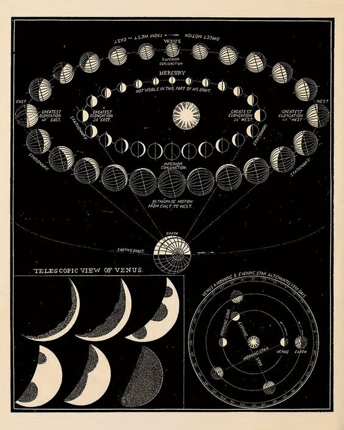
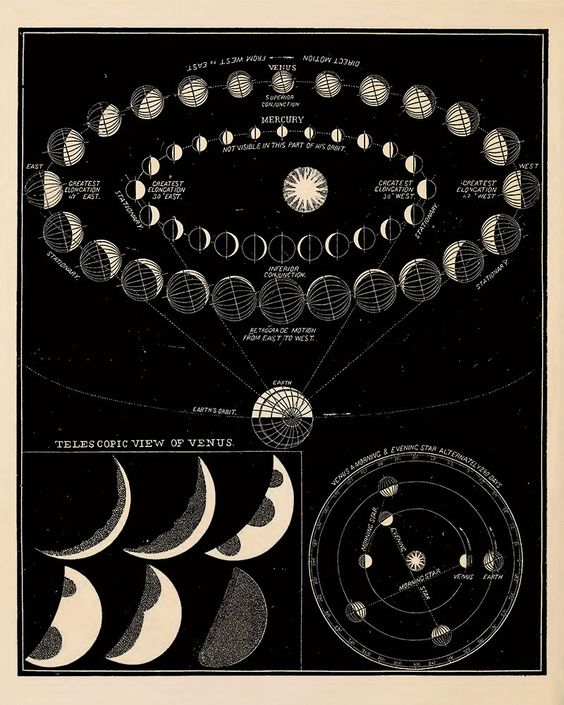

The zodiac
A constellation is a cluster of stars in the sky that are grouped together in a particular pattern and which have been given a name. The most famous constellations come mainly from the classical Greek tradition, such as Cassiopeia, Hercules, Pegasus or Ursa Major. However, none of these constellations are part of the zodiac.
The constellations found in the zodiac will surely ring a bell. Gemini, Leo, Sagittarius or Scorpio are familiar names to most of us. When grouped with the other Zodiac constellations, which add up to twelve, they form a pattern in the sky. This pattern has been used for ages by astronomers, as it makes it easier for observers to track the movement of the solar system and the stars throughout the course of the year.
In other words, the zodiac constellations make a two-dimensional map of the sky that is very useful for orientation. It made life easier for ancient astronomers to find objects and explain their location in the sky, as well as for travelers and sailors, who use the stars to determine their position.
The twelve constellations of the zodiac lie along the plane of the ecliptic. The ecliptic is defined by the circular path of the Sun across the sky as seen from Earth. In other words, the Sun appears to pass through these constellations over the course of a year. It is because of this predictable cycle that the journey of the Sun through the zodiac was used by ancient cultures to determine the time of year. In this way, the so-called cardinal constellations of the zodiac (Aries, Cancer, Libra and Capricorn) mark the beginning of the four seasons. The Sun enters these constellations on the first days of spring, summer, autumn and winter respectively.
In fact, the word Zodiac translates to circle of animals, or circle of life, in ancient Greek. This explains why most of its constellations are represented as animals or mythical creatures. The 12 constellations of the zodiac are Aries, Taurus, Gemini, Cancer, Leo, Virgo, Libra, Scorpius, Sagittarius, Capricornus, Aquarius and Pisces. All of these, as well as the full circle of the zodiac are easily visible in present-day star maps among other constellations.
Contrary to popular belief, the zodiac is much more than an astrological system to predict love, fortune, and health, among other things. For millennia, it was a tool used by our ancestors to better understand the motions of the sun and the Earth. Not only that, but it encompasses the humble beginnings of astronomy, one of the oldest sciences known to mankind It is part of our heritage and, as such, it is worth knowing its origin. Stay tuned for more insights on the stars and the secrets they behold!
 
